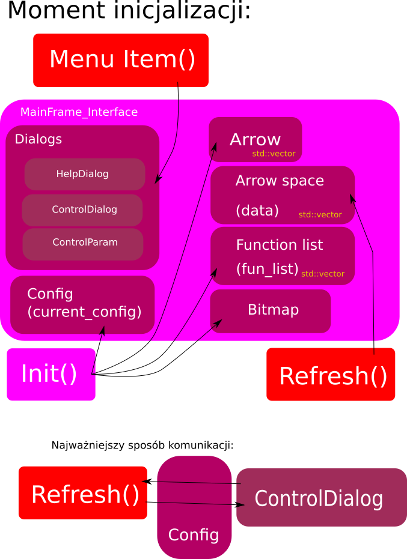

|
Wizualizacja pola wektorowego
|
Celem projektu jest napisanie programu, który pozwala wizualizować funkcję V = f(r) , gdzie V oraz r to wektory w przestrzeni 3D. Oczywiście program nie musi umieć interpretować żadnych funkcji wpisywanych przez użytkownika. Zestaw kilku przykładowych funkcji powinien zostać wpisany na stałe do kodu programu, a użytkownik powinien mieć możliwość wyboru jednej z nich i ewentualnie zmiany jej parametrów.
Program pozwala na wizualizację funkcji pola poprzez rysowanie strzałek, które mają początek w punktach węzłowych. Przedział zmienności argumentów X,Y,Z jak i to na ile odcinków dzielimy te przedziały podaje użytkownik. Współczynnik skalowania określający jak długie są strzałki użytkownik może zmieniać przy użyciu suwaka. Oczywiście całość można dowolnie obracać. Program posiada także kilka funkcji do wyboru. Funkcje te mają wstawione parametry swobodne, które użytkownik może zmieniać w trakcie pracy programu.
W tej wersji program potrafi sam dobrać długość strzałek tak, aby najdłuższa nie była większa niż odległości węzeł-węzeł. Oczywiście użytkownik w dalszym ciągu posiada możliwość zmiany skali ręcznie. Istnieje tryb wyświetlania, w którym długości strzałek są stałe, a o wartości funkcji w węźle informuje nas kolor strzałki (standardowa skala – niebieski dla minimum – czerwony dla maksimum). Użytkownik ma możliwość zapisania wyniku na dysk w postaci pliku graficznego o zadanym. Program powinien mieć również możliwość „odcięcia” części węzłów poprzez wprowadzenie dodatkowej płaszczyzny. Wszystkie strzałki wychodzące z węzłów po wybranej stronie płaszczyzny nie będą rysowane.

Część klas nie została opisana - zostały one wygenerowane automatycznie, aby poznać ich stukturę i funkcję które pełnią należy zainstalować wxFormBuilder i uruchomić plik Layout.fbp.